Database PostgreSQL dùng ba method khác nhau để apply where clause (predicate):
Access predicate thể hiện start và stop condition của leaf node traversal.
Index filter predicate chỉ được apply trong lúc leaf node traversal. Chúng không đóng góp vào start và stop condition, đồng thời không thu hẹp scanned range.
Predicate trên các column không thuộc index được evaluate ở table level. Để làm vậy, database trước hết phải load row từ heap table.
PostgreSQL execution plan không hiển thị riêng index access predicate và index filter predicate — cả hai đều xuất hiện dưới dạng “Index Cond”. Vì vậy, phải đối chiếu execution plan với index definition để phân biệt access predicate và index filter predicate.
Các predicate được hiển thị dưới dạng “Filter” luôn là table level filter predicate — kể cả khi chúng được hiển thị cho một Index Scan operation.
Hãy xem ví dụ sau, vốn xuất hiện lần đầu trong chapter “Performance and Scalability”:
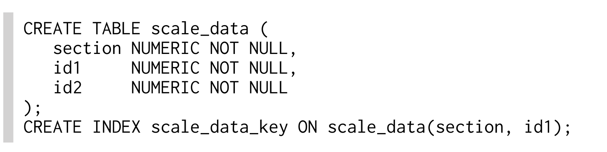
Select sau filter trên column ID2, column không được đưa vào index:
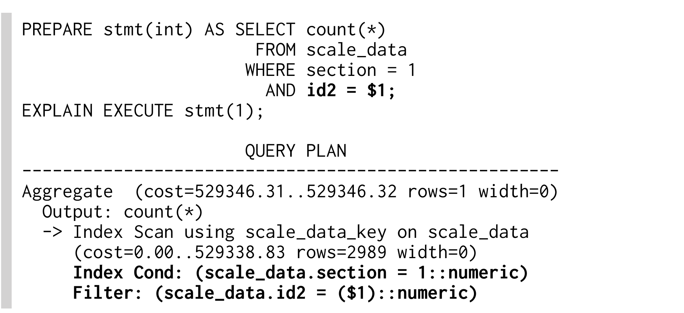
Predicate ID2 xuất hiện dưới dạng "Filter" bên dưới Index Scan operation. Điều này là vì PostgreSQL thực hiện table access như một phần của Index Scan operation. Nói cách khác, operation TABLE ACCESS BY INDEX ROWID của Oracle database bị ẩn bên trong PostgreSQL’s Index Scan operation. Vì vậy, một Index Scan có thể filter trên các column không nằm trong index.
Khi thêm index từ chapter “Performance and Scalability”, ta thấy tất cả column đều xuất hiện dưới dạng “Index Cond” — bất kể chúng là access predicate hay filter predicate.
Execution plan với index mới không hiển thị filter condition nào:
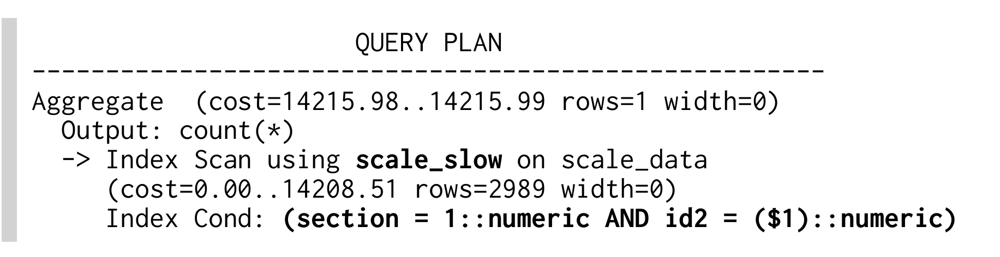
Lưu ý rằng condition trên ID2 không thể thu hẹp leaf node traversal vì index có column ID1 đứng trước ID2. Điều đó nghĩa là Index Scan sẽ scan toàn bộ range của condition SECTION=1::numeric và apply filter ID2=($1)::numeric trên từng row thỏa clause trên SECTION.
Method được mô tả trong section này áp dụng cho SQL Server Management Studio 2005 trở lên.
Với SQL Server, có vài cách để lấy execution plan. Hai method quan trọng nhất là:
Biểu diễn dạng graphical của SQL Server execution plan dễ truy cập trong Management Studio nhưng khó chia sẻ, vì thông tin predicate chỉ hiển thị khi di chuột qua operation tương ứng (“hover”).
Execution plan dạng tabular khó đọc nhưng dễ copy vì hiển thị toàn bộ thông tin liên quan cùng lúc.
Graphical explain plan được tạo bằng một trong hai button được highlight bên dưới.
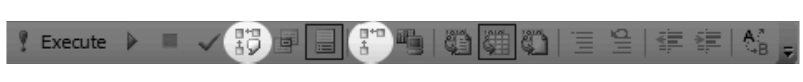
Button bên trái explain statement đang được highlight trực tiếp. Button bên phải sẽ capture plan vào lần tiếp theo một SQL statement được execute.
Trong cả hai trường hợp, graphical representation của execution plan xuất hiện trong tab “Execution plan” của pane “Results”.
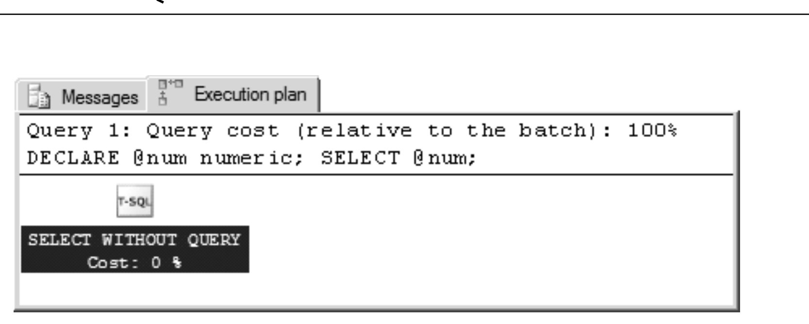
Graphical representation khá dễ đọc sau một chút thực hành. Tuy nhiên, nó chỉ hiển thị thông tin cơ bản nhất: các operation và table hoặc index mà chúng tác động lên.
Management Studio hiển thị thêm thông tin khi di chuột qua một operation (mouseover/hover). Điều này khiến việc chia sẻ execution plan với đầy đủ chi tiết trở nên khó khăn.
Biểu diễn dạng tabular của SQL Server execution plan được lấy bằng cách profile việc execute một statement. Command sau bật chế độ đó:
Sau khi bật, mỗi statement được execute sẽ tạo thêm một result set. Chẳng hạn, select statement tạo ra hai result set — trước tiên là result của statement, sau đó là execution plan.
Execution plan dạng tabular hầu như không dùng được trong SQL Server Management Studio vì StmtText quá rộng để vừa màn hình.
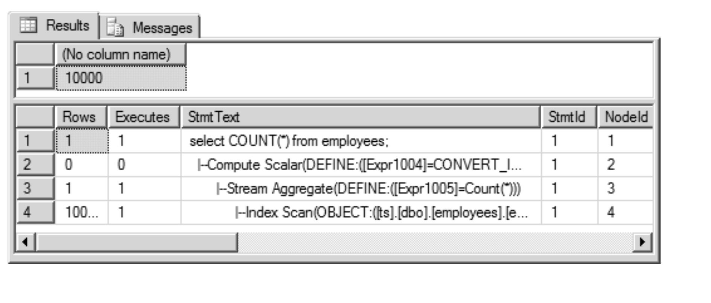
Ưu điểm của cách biểu diễn này là có thể copy mà không làm mất thông tin quan trọng. Điều này rất tiện nếu bạn muốn đăng SQL Server execution plan lên forum hoặc nền tảng tương tự. Trong trường hợp đó, thường chỉ cần copy column StmtText rồi format lại một chút:
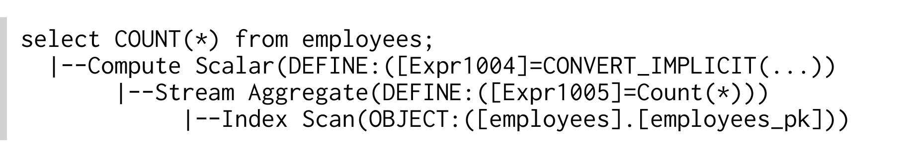
Cuối cùng, bạn có thể tắt profiling lại:
SQL Server có terminology đơn giản: operation “Scan” đọc toàn bộ index hoặc table, còn operation “Seek” dùng B-tree hoặc physical address (RID, giống Oracle ROWID) để truy cập một phần cụ thể của index hoặc table.
Index Seek thực hiện B-tree traversal và đi qua các leaf node để tìm mọi matching entry. Xem thêm “Anatomy of an Index” ở page 1.
Đọc toàn bộ index — tất cả row — theo index order. Tùy system statistics, database có thể thực hiện operation này nếu cần mọi row theo index order — chẳng hạn vì có order by clause tương ứng.
Retrieve một row từ clustered index. Operation này tương tự Oracle INDEX UNIQUE SCAN cho một Index-Organized-Table (IOT). Xem thêm “Clustering Data” ở page 111.
Retrieve một row từ table — giống Oracle TABLE ACCESS BY INDEX ROWID. Xem thêm “Anatomy of an Index” ở page 1.
Còn được gọi là full table scan. Đọc toàn bộ table — tất cả row và column — theo cách chúng được lưu trên disk. Dù multi-block read operation có thể cải thiện đáng kể tốc độ Table Scan, đây vẫn là một trong những operation tốn kém nhất. Ngoài IO rate cao, Table Scan còn phải kiểm tra mọi table row nên có thể tiêu tốn nhiều CPU time. Xem thêm “Full Table Scan” ở page 13.
Nhìn chung, join operation chỉ xử lý hai table mỗi lần. Nếu query có nhiều join hơn, chúng được execute tuần tự: trước tiên là hai table, sau đó là intermediate result với table tiếp theo. Trong ngữ cảnh join, từ “table” vì vậy cũng có thể có nghĩa là “intermediate result”.
Join hai table bằng cách lấy result từ một table rồi query table còn lại cho từng row của table thứ nhất. SQL Server cũng dùng nested loops operation để retrieve table data sau một index access. Xem thêm “Nested Loops” ở page 92.
Hash match join load các candidate record từ một phía của join vào hash table, sau đó probe hash table cho từng row từ phía còn lại của join. Xem thêm “Hash Join” ở page 101.
Merge join kết hợp hai sorted list như một zipper. Cả hai phía của join phải được presort. Xem thêm “Sort Merge” ở page 109.
Sort result theo order by clause. Operation này cần lượng memory lớn để materialize intermediate result (không pipelined). Xem thêm “Indexing Order By” ở page 130.
Sort một subset của result theo order by clause. Dùng cho top-N query nếu pipelined execution không thể thực hiện. Xem thêm “Querying Top-N Rows” ở page 143.
Aggregate một presorted set theo group by clause. Operation này không buffer intermediate result — nó được execute theo pipelined manner. Xem thêm “Indexing Group By” ở page 139.
Group result bằng hash table. Operation này cần lượng memory lớn để materialize intermediate result (không pipelined). Output không được order theo cách có ý nghĩa nào. Xem thêm “Indexing Group By” ở page 139.
Abort các operation bên dưới khi đã fetch đủ số row mong muốn. Xem thêm “Querying Top-N Rows” ở page 143.
Hiệu quả của top-N query phụ thuộc vào execution mode của các operation bên dưới. Nó rất kém hiệu quả khi abort các non-pipelined operation như Sort.
Database SQL Server dùng ba method khác nhau để apply where clause (predicate):
Access predicate thể hiện start và stop condition của leaf node traversal.
Index filter predicate chỉ được apply trong lúc leaf node traversal. Chúng không đóng góp vào start và stop condition, đồng thời không thu hẹp scanned range.
Predicate trên các column không thuộc index được evaluate ở table level. Để làm vậy, database trước hết phải load row từ heap table.
Section sau giải thích cách nhận diện filter predicate trong SQL Server execution plan. Nội dung dựa trên sample dùng để minh họa tác động của index filter predicate trong Chapter 3.
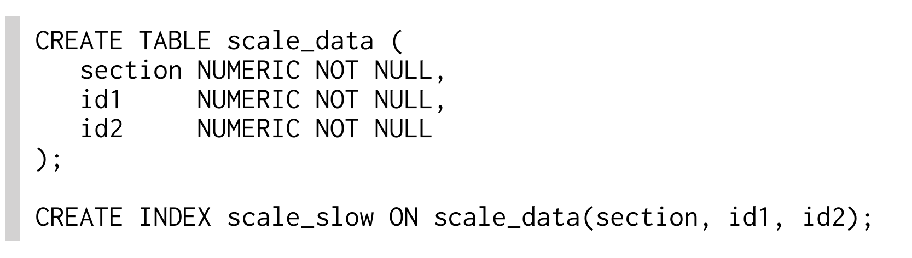
Sample statement select theo SECTION và ID2:
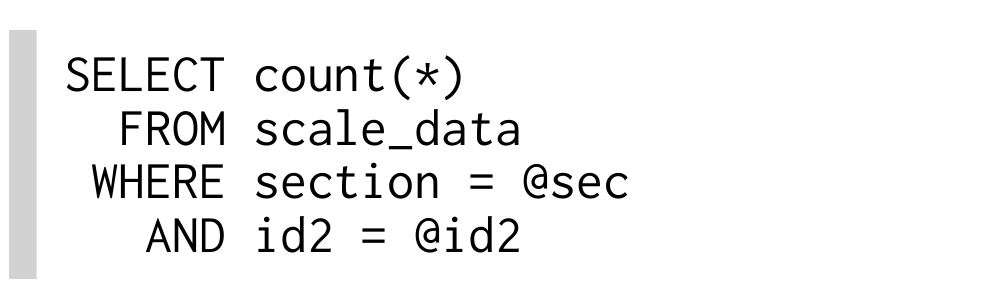
Graphical execution plan ẩn thông tin predicate trong một tooltip chỉ xuất hiện khi di chuột qua Index Seek operation.
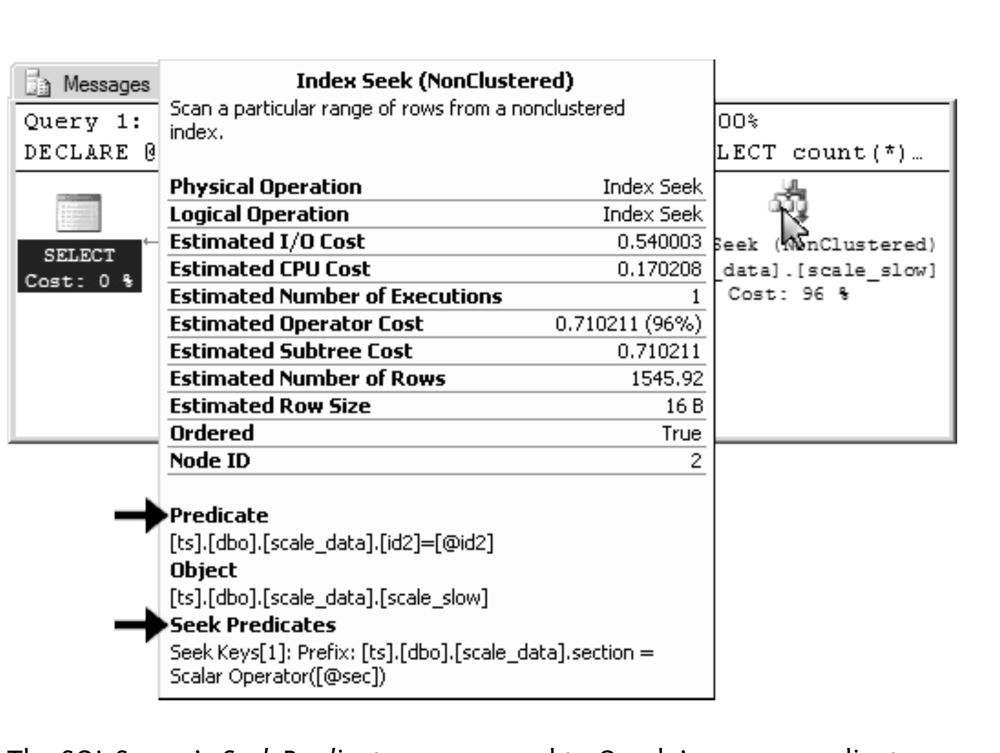
Seek Predicates của SQL Server tương ứng với access predicate của Oracle — chúng thu hẹp leaf node traversal. Filter predicate chỉ được gắn nhãn là Predicates trong graphical execution plan của SQL Server.
Tabular execution plan có thông tin predicate trong cùng column với nơi các operation xuất hiện. Vì vậy, rất dễ copy và paste toàn bộ thông tin liên quan trong một lần.
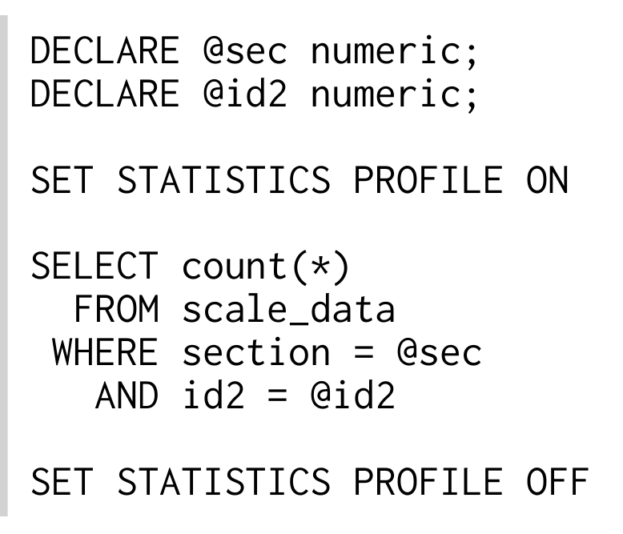
Execution plan xuất hiện dưới dạng result set thứ hai trong results pane. Sau đây là column StmtText — đã format lại một chút để dễ đọc:
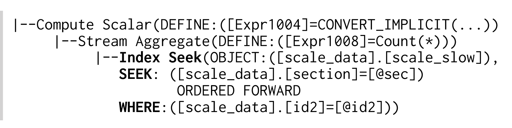
Nhãn SEEK mở đầu cho access predicate, còn nhãn WHERE đánh dấu filter predicate.
Method được mô tả trong section này áp dụng cho mọi version của MySQL.
Đặt explain trước một SQL statement để lấy execution plan.
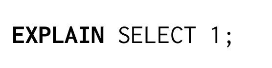
Plan được hiển thị dưới dạng tabular (đã bỏ một số column ít quan trọng):
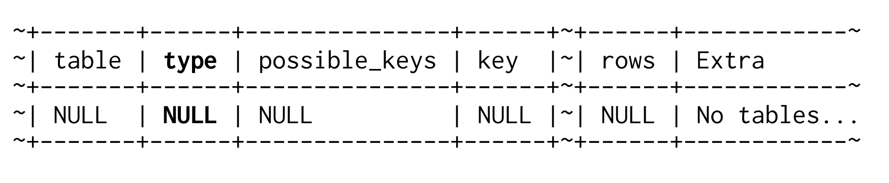
Thông tin quan trọng nhất nằm trong column TYPE. Dù tài liệu MySQL gọi đây là “join type”, tôi thích gọi nó là “access type” hơn vì thực tế nó chỉ cách data được truy cập. Ý nghĩa của từng type value được mô tả trong section tiếp theo.
Explain plan của MySQL dễ tạo cảm giác an toàn giả vì nói rất nhiều về việc index được sử dụng. Dù đúng về mặt kỹ thuật, điều đó không có nghĩa là index đang được dùng hiệu quả. Thông tin quan trọng nhất nằm trong column TYPE của MySQL explain output — nhưng ngay cả keyword INDEX ở đó cũng không cho biết việc indexing có đúng hay không.
Chỉ thực hiện B-tree traversal. Database dùng operation này khi primary key hoặc unique constraint bảo đảm search criteria match không quá một entry. Xem thêm “Anatomy of an Index” ở page 1.
Thực hiện B-tree traversal và đi qua leaf node để tìm mọi matching entry (tương tự INDEX RANGE SCAN). Xem thêm “Anatomy of an Index” ở page 1.
Đọc toàn bộ index — tất cả row — theo index order (tương tự INDEX FULL SCAN).
Đọc toàn bộ table — tất cả row và column — theo cách chúng được lưu trên disk. Ngoài IO rate cao, table scan còn phải kiểm tra mọi row trong table nên có thể tạo tải CPU đáng kể. Xem thêm “Full Table Scan” ở page 13.
Khi column “Extra” hiển thị “Using Index”, nghĩa là table không được access vì index có toàn bộ data cần thiết. Hãy nghĩ đến “using index ONLY”. Xem thêm “Clustering Data” ở page 111.
PRIMARY là tên của index được tự động tạo cho primary key.
“using filesort” trong column Extra cho biết có explicit sort operation — bất kể sort diễn ra ở đâu (main memory hay disk). “Using filesort” cần lượng memory lớn để materialize intermediate result (không pipelined). Xem thêm “Indexing Order By” ở page 130.
MySQL execution plan không hiển thị top-N query một cách rõ ràng. Nếu dùng limit syntax mà không thấy “using filesort” trong extra column, query được execute theo pipelined manner. Xem thêm “Querying Top-N Rows” ở page 143.
Database MySQL dùng ba cách khác nhau để evaluate where clause (predicate):
Access predicate thể hiện start và stop condition của leaf node traversal.
Index filter predicate chỉ được apply trong lúc leaf node traversal. Chúng không đóng góp vào start và stop condition, đồng thời không thu hẹp scanned range.
Predicate trên các column không thuộc index được evaluate ở table level. Để làm vậy, database trước hết phải load row từ table.
MySQL execution plan không cho biết condition nào dùng loại predicate nào — chúng chỉ liệt kê các loại predicate đang được sử dụng.
Trong ví dụ sau, toàn bộ where clause được dùng làm access predicate:
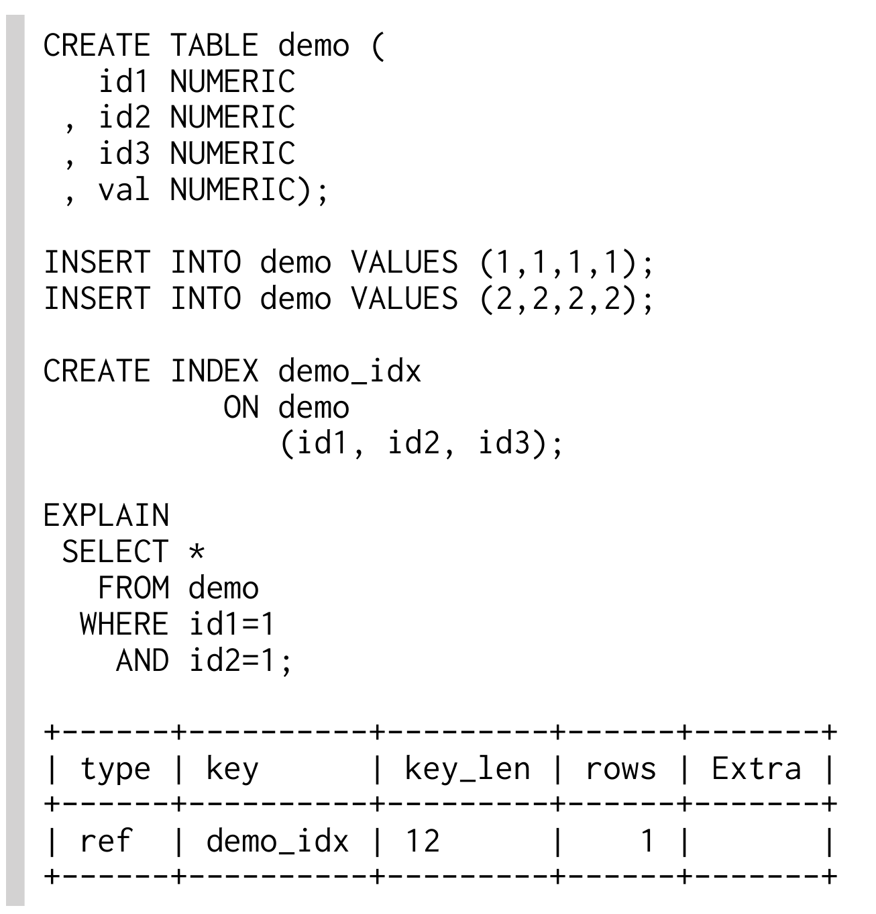
Trong column “Extra” không hiển thị “Using where” hoặc “Using index condition”. Tuy nhiên, index đã được sử dụng (type=ref, key=demo_idx), vì vậy có thể giả định toàn bộ where clause đủ điều kiện làm access predicate.
Có thể dùng key_len value để kiểm tra điều này. Nó cho biết query sử dụng 12 byte đầu tiên của index definition. Để map giá trị này với tên column, bạn “chỉ” cần biết mỗi column cần bao nhiêu storage space (xem “Data Type Storage Requirements” trong tài liệu MySQL). Khi không có NOT NULL constraint, MySQL cần thêm một byte cho mỗi column. Sau cùng, mỗi NUMERIC column trong ví dụ cần 6 byte. Vì vậy, key length bằng 12 xác nhận hai index column đầu tiên được dùng làm access predicate.
Khi filter bằng column ID3 (thay vì ID2), MySQL 5.6 trở lên dùng index filter predicate (“Using index condition”):
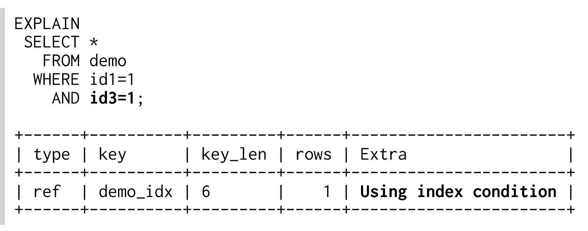
Trong trường hợp này, key length bằng six nghĩa là chỉ một column được dùng làm access predicate.
Các version MySQL trước đây dùng table level filter predicate cho query này — được nhận diện bởi “Using where” trong column “Extra”:
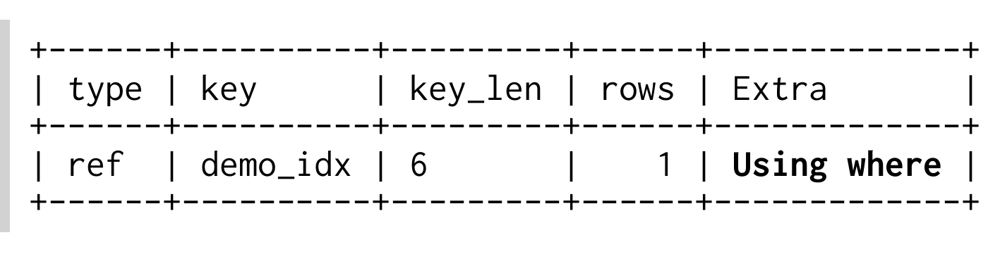
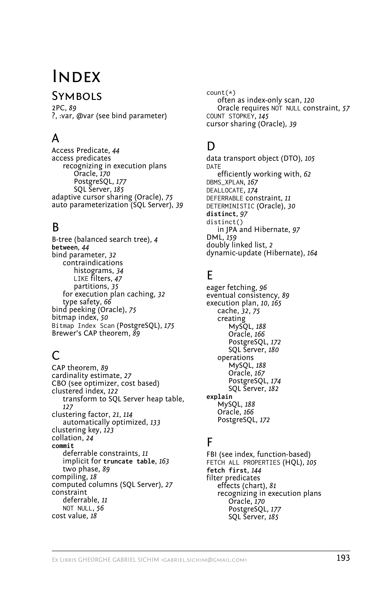
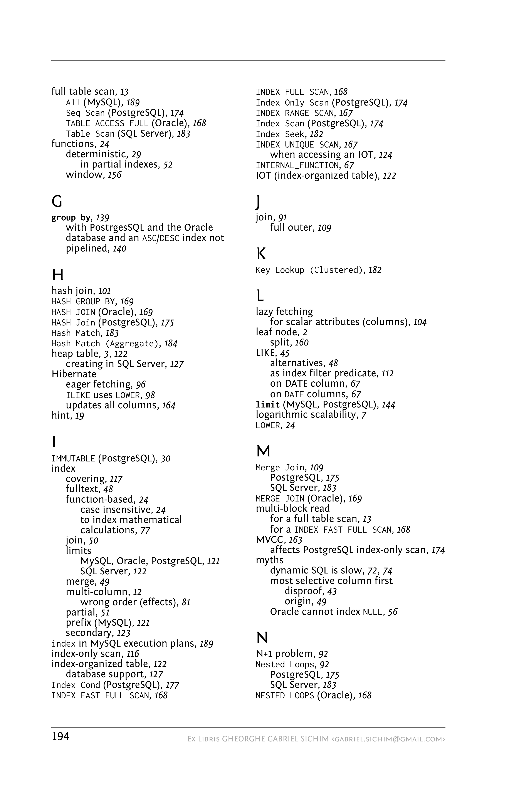
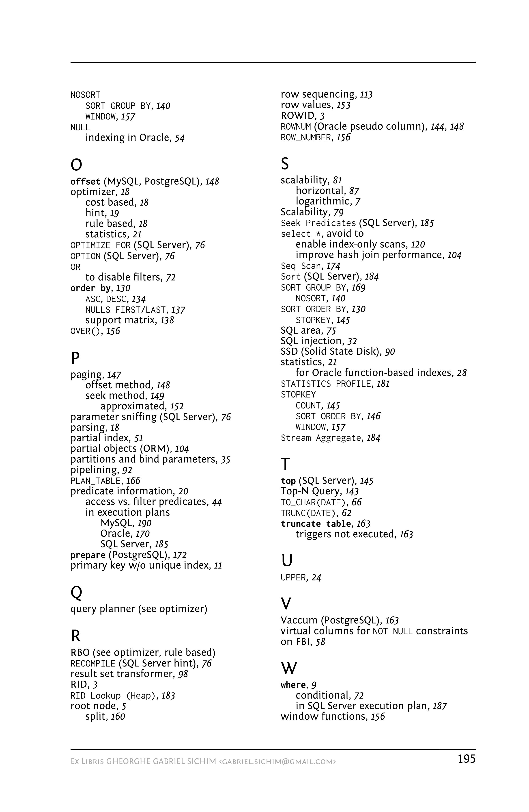
Có thể bạn vẫn còn câu hỏi hoặc gặp một vấn đề rất cụ thể mà “SQL Performance Explained” chưa trả lời thỏa đáng? Instant Coaching là giải pháp cho bạn.
Instant Coaching là cách nhanh, dễ và không phiền phức để developer giải quyết các vấn đề khó về SQL database performance thông qua desktop sharing.
Instant Coaching không dùng các ví dụ dựng sẵn; các case thực tế được trình bày vì đó là cách tối ưu để hỗ trợ bạn giải quyết vấn đề hiện tại với SQL database chậm. Instant Coaching độc lập với vendor, hiệu quả… và có mức giá rất hợp lý!
Đây là lúc tìm hiểu thêm về Instant Coaching! Hãy truy cập website của chúng tôi để biết thêm thông tin:
http://winand.at
SQL Performance Explained giúp developer cải thiện database performance. Trọng tâm là SQL — bao quát mọi SQL database chính mà không sa đà vào chi tiết của một product cụ thể nào.
Bắt đầu từ nền tảng về indexing và where clause, SQL Performance Explained dẫn developer đi qua mọi thành phần của một SQL statement và giải thích các vấn đề thường gặp của object-relational mapping (ORM) tool như Hibernate.
» Sử dụng multi-column index
» Áp dụng SQL function đúng cách
» Sử dụng LIKE query hiệu quả
» Tối ưu join operation
» Clustering data để cải thiện performance
» Pipelined execution của order by và group by
» Đạt performance tốt nhất cho pagination query
» Hiểu khả năng scalability của database
Cấu trúc có hệ thống khiến SQL Performance Explained vừa là textbook vừa là reference manual mà mọi developer nên có trên bookshelf.
Oracle® Database · SQL Server® · MySQL · PostgreSQL
Markus Winand đã phát triển SQL application từ năm 1998. Mối quan tâm chính của ông gồm performance, scalability, reliability và nói chung là mọi khía cạnh kỹ thuật khác của software quality. Hiện Markus làm trainer và coach độc lập tại Vienna, Austria.
http://winand.at/
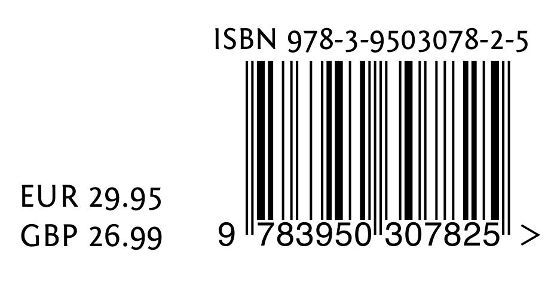